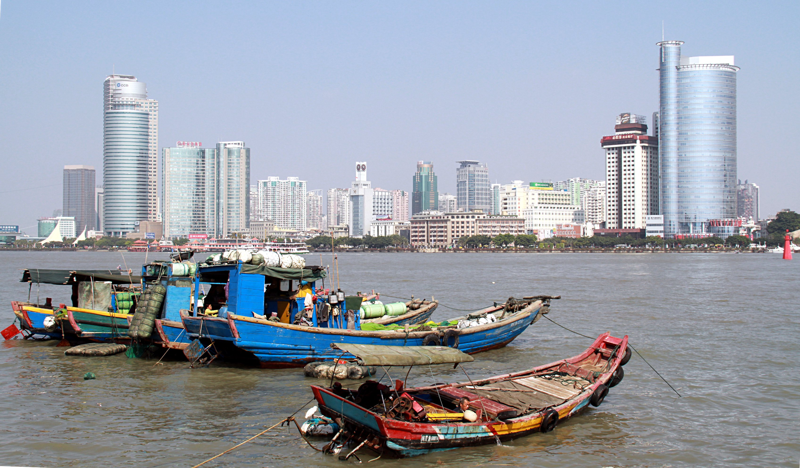

Wang Rong Xuan’s grandfather
From Anhai to Xiamen

He ran a garment workshop with his wife in Fujian, on China’s southeast coast. They moved the business from their village to Anhai, then bought a flat in Xiamen for their children’s schooling. In this interview with his grandchild, he remembers the years the family lived apart and the daily drive to the factory after they were together again.